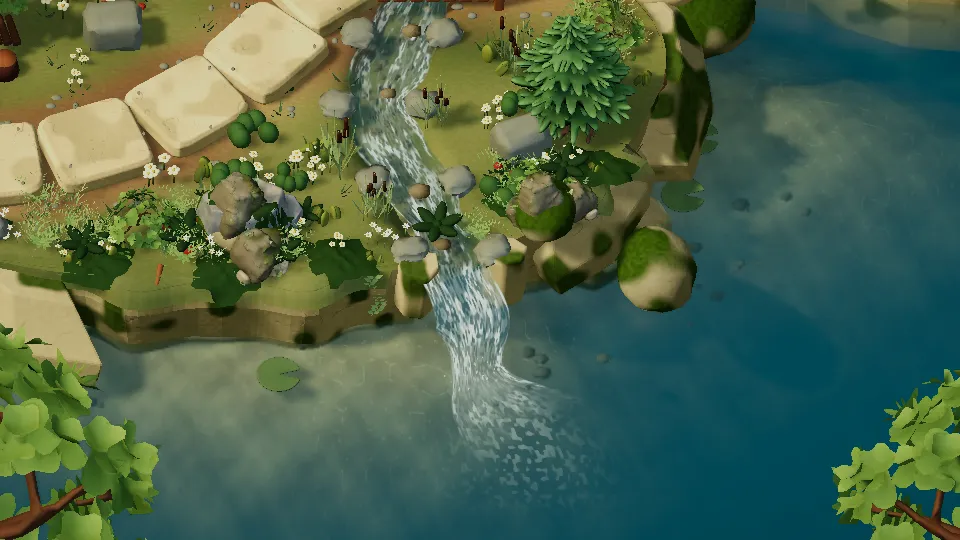
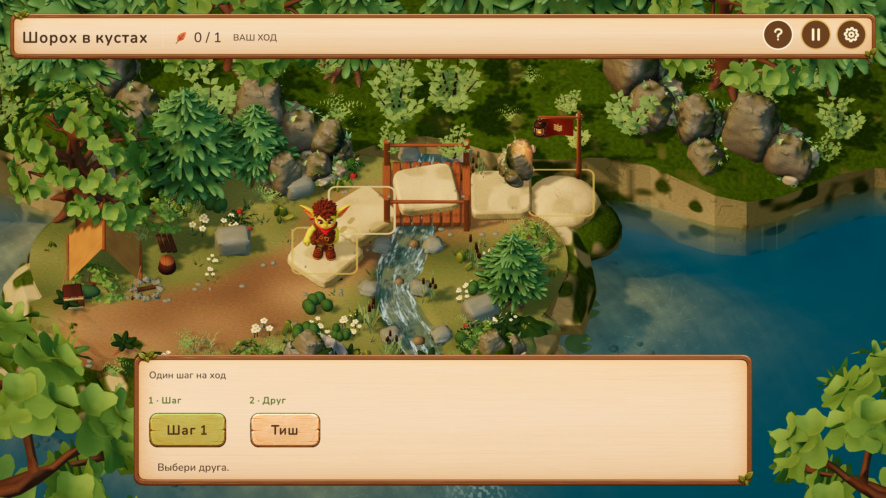

Glimblehop · Unity 6.6 · озеро v01
Прозрачный берег и глубина
Доработка действующего игрового уровня: асимметричное мелководье, песок и галька под водой, плавный переход к бирюзовой глубине, мягкие отражения и спокойная рябь.
ДоПосле
Поверхность в движении

10 секунд, 120 отрисованных кадров, 12 кадров/с. Фиксированная камера позволяет оценить движение воды; это художественный просмотр, а не замер FPS игры.
Крупная рябь мягко искажает отражения. Световые узоры проявляются на освещённом мелководье. Белая пена сосредоточена у места впадения, её след постепенно затухает.
В игровой камере

Прохождение кампании с игровым интерфейсом. Геометрия восьми точек прыжка сохранена.
Что исправлено
- У старого дна все 1660 нормалей были обращены вниз. Новое дно смотрит вверх, имеет пологую прибрежную полку и песчано-галечную текстуру.
- Шейдер отдельно обрабатывает отсутствие данных глубины и проверяет смещённую выборку преломления, чтобы не затягивать надводные силуэты в воду.
- Шероховатость управляет размытием отражений через mip-уровни. Невидимые поверхности пропускают отражающий проход; движение камеры сохраняет своевременное обновление.
- Расчёт тумана выполняется по глубине пикселя, а не по четырём вершинам огромной водной плоскости.
- Убрана пунктирная береговая пена. Световые узоры на дне используют две текстурные выборки вместо процедурного поиска девяти соседей на каждом пикселе.
Проверки
13 уникальных проверок пройдены с учётом повторного прогона. Проверены направление дна, погружение отмели, mip-уровни отражений, пропуск невидимой воды, освобождение ресурсов, восстановление освещения и прохождение шести уровней.
В первом прогоне слишком узкий диапазон теста дна не учитывал склон глубиной 2,20 м; диапазон уточнён. Прохождение кампании впервые остановилось на ожидании анимации уровня 5; повторный прогон при фиксированных 30 кадрах/с прошёл. Эти результаты сохранены в обоих отчётах.
Web-сборка и GPU-замеры на целевых устройствах в этом проходе не выполнялись. Отражения и дополнительная текстура требуют отдельной проверки бюджета WebGL.